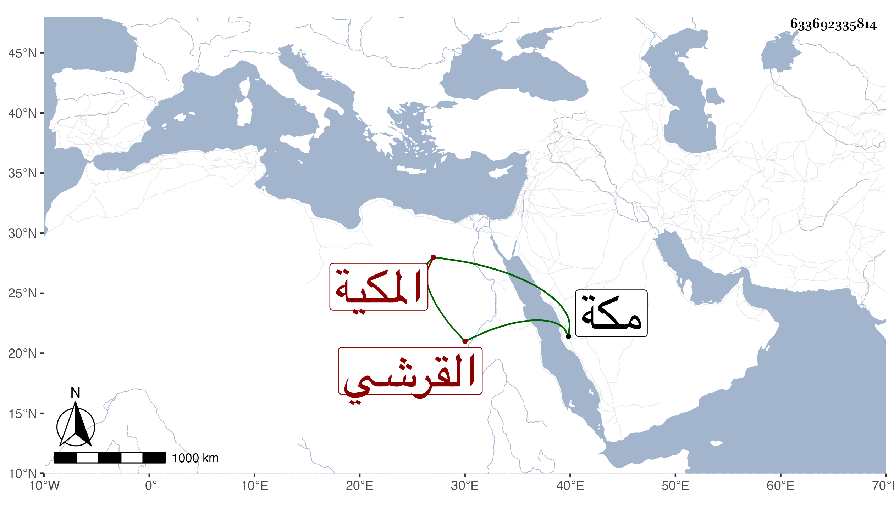

0902Sakhawi.DawLamic.ITO20230111-ara1.EIS1600.633692335814
Biography ID: 633692335814
843
أم الحسن ابنة أبي الخير محمد بن أبي السعود محمد بن حسين بن علي بن أحمد بن عطية بن ظهيرة القرشي المكية ، أمها حبشية لأبيها ، ولدت في ذي الحجة سنة عشر وثمانمائة بمكة ، وأجاز لهما عائشة ابنة ابن عبد الهادي والزين المراغي وعبد القادر الارموى وابن طولوبغا وابن الكويك وغيرهم ، وماتت وهي بكر في جمادى الاولى سنة ثلاث وثلاثين بمكة .
